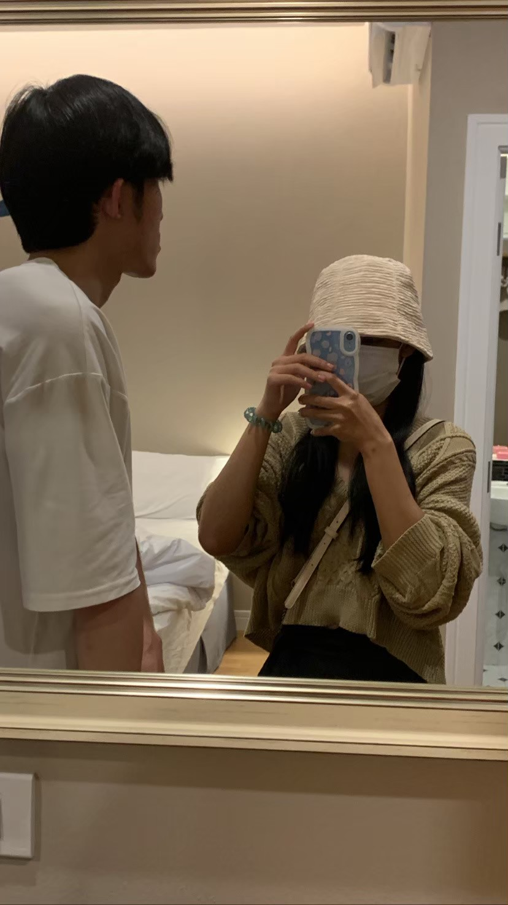
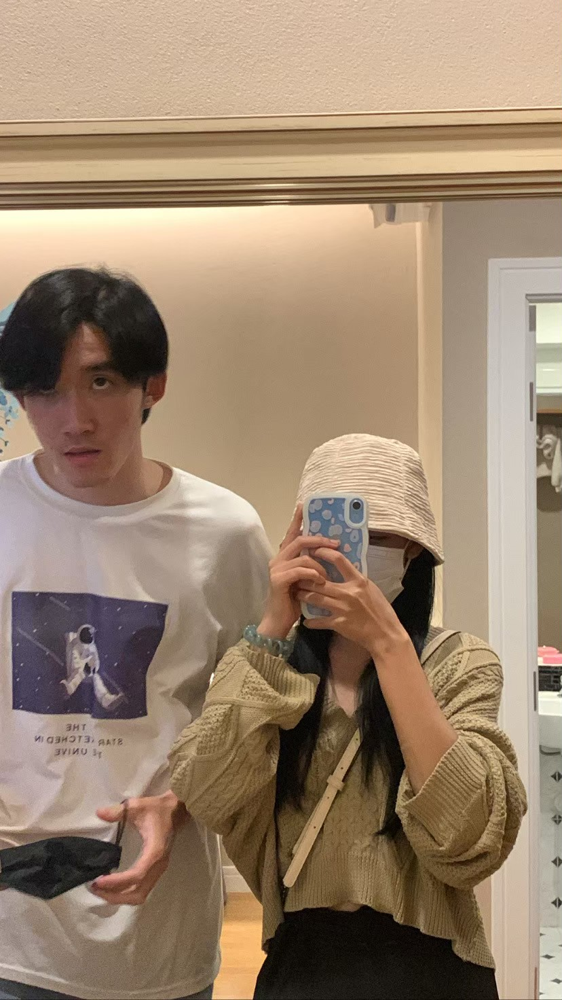

Your browser does not support the video tag.
For You Ploy
สวัสดีที่รัก!
I love you more than words can say❤️
💞รักที่สุด!!!💞
ขอบคุณที่อยู่เคียงข้างกันเสมอ!


Your browser does not support the audio element.